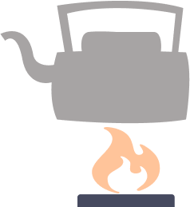
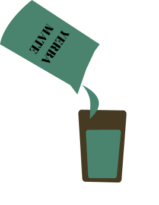
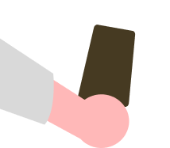
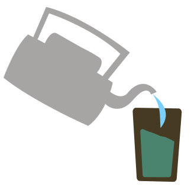
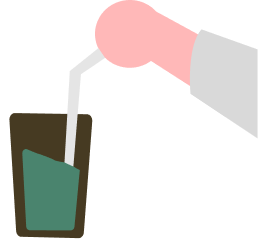
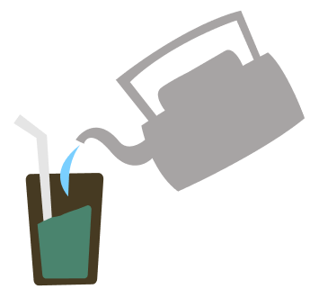

Calentar el agua hasta una temperatura aproximada de 75 - 80°C.

Agregar la yerba elegida hasta rellenar un 70% del mate.

Dar vuelta el mate tapando con la mano la abertura y agitar para que el material fino esté en la parte superior.

Agregar una leve cantidad de agua en la parte de menor altura de yerba.

Colocar la bombilla, tapando el pico, en la parte de menor cantidad de yerba.

Agregar el agua caliente sin sobrepasar la altura máxima de la yerba, y disfrutar.